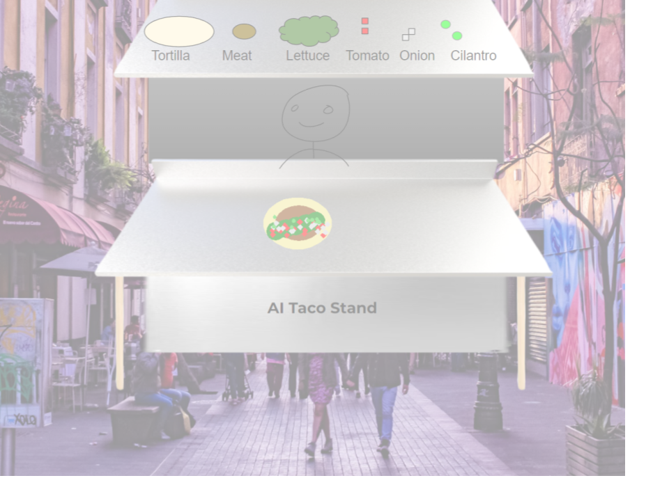
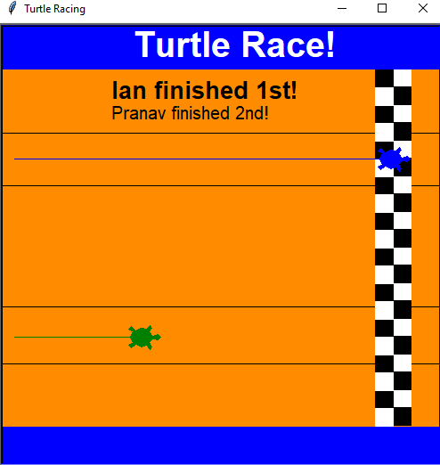
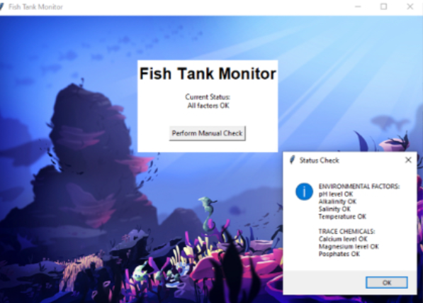
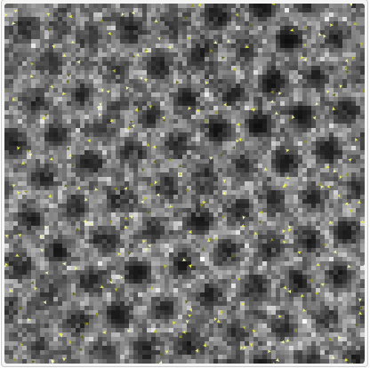
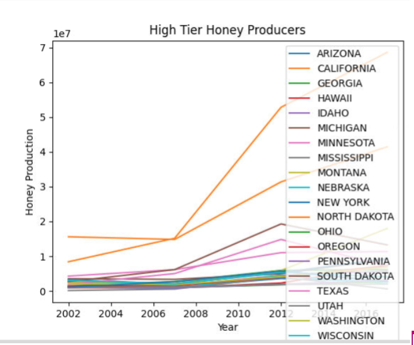

Home
Portfolio
About Me
This is my Portfolio Page!
1.1.9 project -- ai taco stand

For our first project, my group created a taco stand. In this game, the plater is greeted and prompted
what type of tortilla they want, and what they want as their 2nd and 3rd fillings/toppings. The player
must input their choice for the turtle to draw the toppings on the taco. At the end, you can choose
whether to make another taco or quit the game.
1.2.5 project -- Turtle Race!

For our second project, my project created a turtle race based on user input, the keys 'a' and 'b'
assigned to two different players. Upon starting the game you are asked for your name, assigned a key,
then you repeatedly press that key to move the turtle horizontally; click faster than the other person
to reach the finish line.
Scratch Project -- space dog
The user’s character, Space Dog, tries to make it past the spikey asteroids to make it to the end
of the game. The user will use the WASD or Arrow keys to move around and jump. When Space Dog collides
with an obstacle a sound will play and Space Dog will respawn back at the beginning of whatever level they were on.
2.1.6 Project -- fish tank

In this project, we had to find various issues in the code for a fish tank that was caused by lack of cybersecurity and may have been the result of malware from phishing emails.
Using debugging practices, we located and fixed the problems
4.1.4 Project -- Honeycomb Simulation

In this project we analyzed the Honeycomb simulation on Netlogo and how it worked. Then we answered questions about
the real life problems affecting honeycomb structure and production, and provided input on some solutions to those problems.
3.1.6 Project -- Analyzing Rover Data
In this project we analyzed rover data to find that the rover is located in the Rocky Mountains. Our graphs based on the rover's sensor data reflect the conditions
of the Rocky Mountains as indicated in PLTW: lower temps heating up quickly, bright lights sometimes interrupted by clouds, low/constant sound levels, constant varying winds.
3.2.4 Project -- Making Meaning From Data

In This project we obtained data on bees online and then analyzed the data thouroughly by creating graphs and extracting any information and correlations from them.